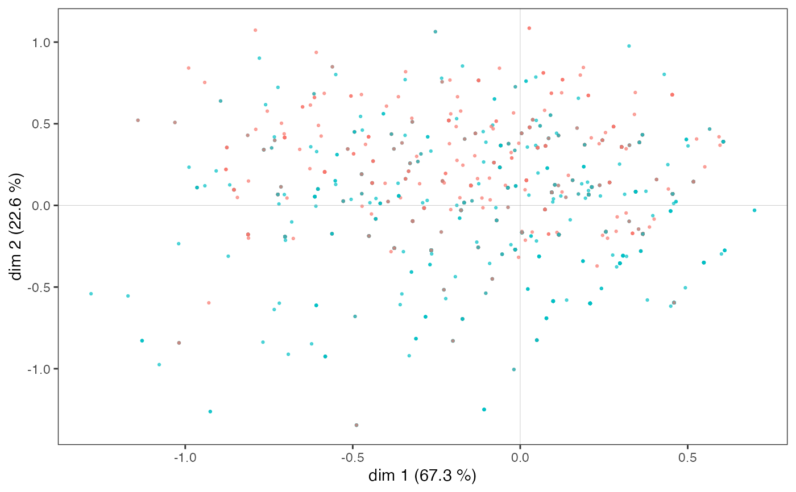

Plots MCA cloud of individuals with ggplot2
ggcloud_indiv.RdPlots a Multiple Correspondence Analysis cloud of individuals, using ggplot2.
ggcloud_indiv(resmca, type='i', points='all', axes=1:2,
col='dodgerblue4', palette='Set2', size = 0.5, alpha=0.6, repel=FALSE,
density=NULL, col.contour="darkred", hex.bins=50, hex.pal="viridis")Arguments
- resmca
object of class
MCA,speMCA,csMCA,stMCAormultiMCA- type
If 'i', points are plotted; if 'inames', labels of individuals are plotted.
- points
character string. If 'all' all points are plotted (default); if 'besth' only those who contribute most to horizontal axis are plotted; if 'bestv' only those who contribute most to vertical axis are plotted; if 'best' only those who contribute most to horizontal or vertical axis are plotted.
- axes
numeric vector of length 2, specifying the components (axes) to plot. Default is c(1,2).
- col
If a factor, points or labels are colored according to their category regarding this factor. If a string with color name, every points or labels have the same color. Default is 'dodgerblue4'.
- palette
If
colis a factor, can be the name of aRColorBrewerpalette, 'bw' for a black and white palette (usesscale_color_grey()) or a character vector with a custom palette. If NULL,ggplot2palette is used. Default is 'Set2'.- size
Size of the points or labels of individuals. Default is 0.5.
- alpha
Transparency of the points or labels of individuals. Default is 0.6.
- repel
Logical. When type='inames', should labels of individuals be repeled ? Default is FALSE.
- density
If NULL (default), no density layer is added. If "contour", density is plotted with contours. If "hex", density is plotted with hexagon bins.
- col.contour
character string. The color of the contours. Only used if density="contour".
- hex.bins
integer. The number of bins in both vertical and horizontal directions. Only used if density="hex".
- hex.pal
character string. The name of a viridis palette for hexagon bins. Only used if density="hex".
Value
a ggplot object
Details
Sometimes the dots are too many and overlap. It is then difficult to get an accurate idea of the distribution of the cloud of individuals. The "density" option allows you to add an additional layer to represent the density of points in the plane, in the form of contours or hexagonal areas.
References
Le Roux B. and Rouanet H., Multiple Correspondence Analysis, SAGE, Series: Quantitative Applications in the Social Sciences, Volume 163, CA:Thousand Oaks (2010).
Le Roux B. and Rouanet H., Geometric Data Analysis: From Correspondence Analysis to Stuctured Data Analysis, Kluwer Academic Publishers, Dordrecht (June 2004).
See also
Examples
## Performs a specific MCA on 'Taste' example data set
## ignoring every 'NA' (i.e. 'not available') categories,
## and then draws the cloud of individuals.
data(Taste)
getindexcat(Taste[,1:11])
#> [1] "FrenchPop.No" "FrenchPop.Yes" "FrenchPop.NA" "Rap.No"
#> [5] "Rap.Yes" "Rap.NA" "Rock.No" "Rock.Yes"
#> [9] "Rock.NA" "Jazz.No" "Jazz.Yes" "Jazz.NA"
#> [13] "Classical.No" "Classical.Yes" "Classical.NA" "Comedy.No"
#> [17] "Comedy.Yes" "Comedy.NA" "Crime.No" "Crime.Yes"
#> [21] "Crime.NA" "Animation.No" "Animation.Yes" "Animation.NA"
#> [25] "SciFi.No" "SciFi.Yes" "SciFi.NA" "Love.No"
#> [29] "Love.Yes" "Love.NA" "Musical.No" "Musical.Yes"
#> [33] "Musical.NA"
mca <- speMCA(Taste[,1:11],excl=c(3,6,9,12,15,18,21,24,27,30,33))
ggcloud_indiv(mca)
# Points are colored according to gender
ggcloud_indiv(mca, col=Taste$Gender, palette='Set2')

# A density layer of contours is added
ggcloud_indiv(mca, density="contour")
# A density layer of hexagon bins is added
ggcloud_indiv(mca, density="hex", hex.bin=10)
#> Warning: Computation failed in `stat_binhex()`
#> Caused by error in `compute_group()`:
#> ! The package `hexbin` is required for `stat_binhex()`